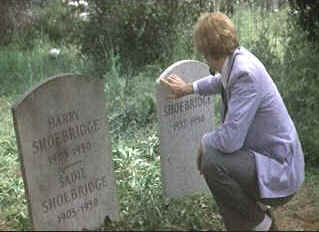

| Family Plot
(SE)/C+, B- |
| Universal/1976/121/ANA
1.85 |
Family Plot fails because of tone. Hitchcock took some
interesting material and broadened it for laughs. Some of it is funny, but the tension is
undermined to a disastrous extent.
Two stories collide in Family Plot. Spiritualist Madam Blanche and
her actor/taxi driver boyfriend George Lumley find a way to mine a big pay-off from one of
Blanche's wealthy elderly clients. As they hunt for the key to unlock the windfall, they are thrown
into contact with a pair of kidnappers. Jeweler Eddie turns kidnapper to feed his hunger. for
precious stones
 |
| Grave considerations. ©Universal |
A couple of the scenes are very effectively filmed. The opening ransom
pay-off is detailed with consummate Hitchcock visual style. Some of the film is actually
embarrassing. An attempt at combining a thrilling car ride with comedy crashes abysmally:
Barbara Harris doing acrobatics all over Bruce Dern is simply inexcusable.
Hitchcock cast some excellent actors in Family Plot. Barbara Harris
is a good comedienne. She even moves with a humorous gait. She brings lots of energy to Blanche.
Bruce Dern, who Hitchcock had used in Marnie, is very funny as George. Dern, usually stuck in
psychotic roles, finds a slap dash comic flare for Lumley. William Devane is effective as Eddie
Adamson, but the character doesn't give him much with which to work. Karen Black wears her wigs to
good effect, but she is merely set dressing.
There are a number of dark scenes in Family Plot that don't look so
great. Contrast ratio is slightly compressed and blacks lack luster. It's reasonably sharp with
only a slight edginess in some peak transitions. The color saturation is adequate but lacks
brilliance. Once again, the Dolby Digital 2 channel sound is clean without distortion.
On hand for this final documentary in the fine Universal Alfred Hitchcock
Collection are stars William Devane, Bruce Dern and Karen Black Their recollections are quite fresh
and entertaining. Composer John Williams adds his view of working with Hitchcock and art
director Henry Bumstead recalls hunting for set locations. Patricia Hitchcock O'Connell adds some
brief comments and Universal studio executive Hilton Green talks a bit about Hitchcock's
professional relationship with Alma. The bulk of the commentary is delivered by assistant director
Howard Kazanjian. Kudos to the fine work of Colleen A. Benn, Universal's driving force behind all
these fine special editions and documentary maker Laurent Bouzereau who undertook the huge job of
writing, directing and producing the documentaries for all these Hitchcock special editions. |
|
|
|

Selections from the Feature Archive
include articles on Akira Kurosawa, Frank
Darabont, Blonde Bimbos, Hollywood Street Gangs, or Vietnam: The
Hollywood Pariah, and many more....

Is North by Northwest Hollywood's definitive exploration of the nose? From schnozzles to
beezeers, film mavens make the most of the foremost. Click on Mount Hitchcock for more.

 Have you visited Home Theater
Talk lately? One of the friendliest places on the Net for Home Theater and DVD discussion, you
can get help for installation problems or simply share your opinions with other Vidiots. Have you visited Home Theater
Talk lately? One of the friendliest places on the Net for Home Theater and DVD discussion, you
can get help for installation problems or simply share your opinions with other Vidiots.
 Images is a
non-commercial Web site created for everyone who enjoys movies and popular culture. Images is
published quarterly; however, new reviews will appear each week, so check back often. Images is a
non-commercial Web site created for everyone who enjoys movies and popular culture. Images is
published quarterly; however, new reviews will appear each week, so check back often.

Home of The American Film Institute.

A great place for movie lovers and techies to visit for exchange of
ideas. New speedy interface is an inspiration for more dialogue. Home of Robert( Obi) George's DVD
reviews.

Truman Show/A,A-
Powered by the consummate taste and directing perfection of Peter Weir. Jim Carrey gives a
marvelous performance. Not to be missed!
|